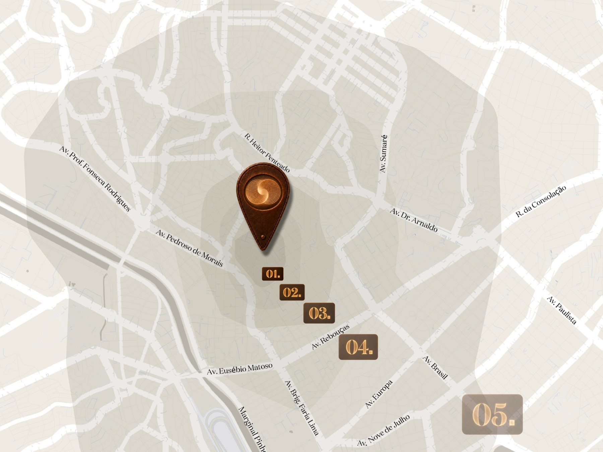

O espaço que te define.
Escolha o que mais combina com o seu gosto.
Sua escolha acompanha você até o fim dessa jornada e chega ao nosso time antes da primeira conversa.
Metade aberta, metade fechada. Cada morador decide o seu momento. A fachada nunca é a mesma, porque é a soma de infinitas escolhas.
Flex Cave. Placas com propriedades isolantes acústicas e de luminosidade.
Rua Morás.
No centro de tudo.
A pé e a poucos minutos dos principais eixos da cidade.

Centralidade, no Morás, se mede andando.
8 vetores de interesse, divididos em 5 raios de proximidade.
Aberto, a Z1 vira um jardim como extensão natural do apartamento.
Fechado, cria uma caverna protegida de ruídos e luminosidade. Se transformando em arte.
Infinitamente Verde
Toda casa tem jardim. Aqui, cada apartamento tem o seu na varanda.
E o jardim é a Z1. A zona verde eternamente preservada. O quintal de cada apartamento.
O edifício nasce digital
para depois virar concreto.
O protótipo é o modelo que representa toda a construção do empreendimento. Cada parte tem a sua própria identidade. Controle e rastreabilidade absoluta.
O estande de vendas da Morás Experience recebe por agendamento. Deixe seus dados e nossa equipe entrará em contato.
Levamos isso pronto para a conversa.
Tem um código de convite? Plantas, tipologias e o tour no protótipo digital são liberados antes da abertura pública.